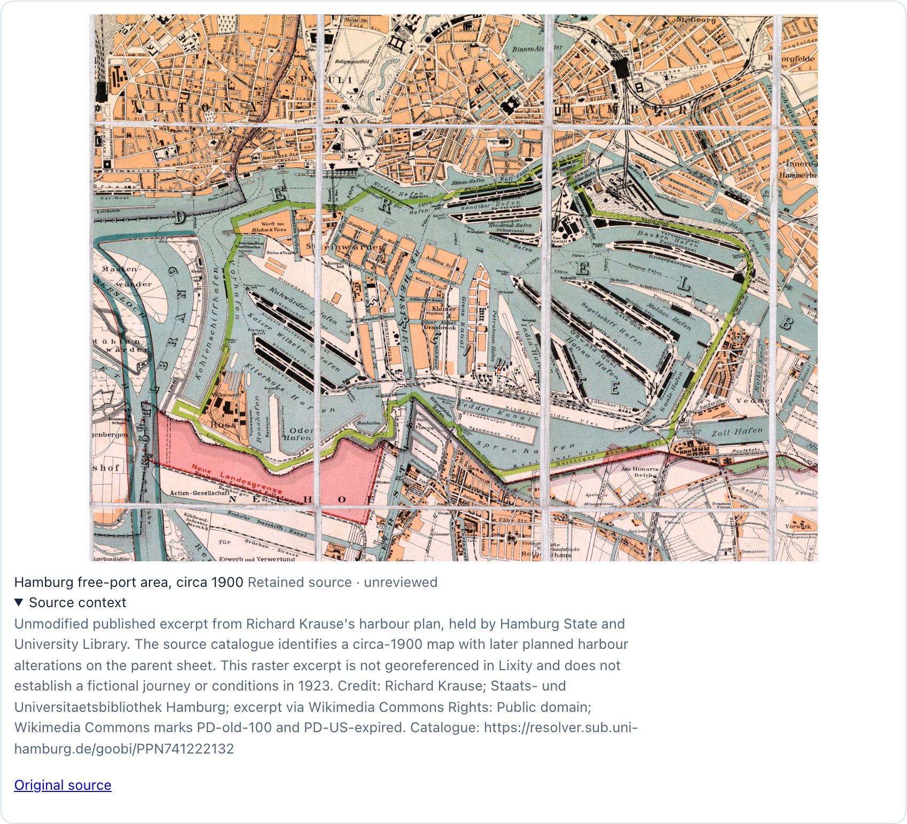

Connect research to your manuscript
Collect sources, read and annotate in Zotero. Use Lixity's research workspace to connect selected evidence with claims, authorial decisions and exact manuscript quotations. A capture preserves the source version you used; it does not establish that a claim is true.
This walkthrough introduces the author workflow. The research manual owns the detailed procedures and compatibility rules; design history is separate from implemented commands.
Updated
Import a local source
Start with a source you are allowed to retain. This synthetic example assumes you saved a short note as source.txt. Initialize only a new research archive:
lixity research init --project ./sample-project --title "Sample research" --language en
lixity research ingest --project ./sample-project --file ./source.txt --allow-retention --origin-url https://example.org/archive/source
# Or import several files with phase-change messages:
lixity research ingest --project ./sample-project --file ./sources/*.txt --allow-retention --progress
lixity research search --project ./sample-project --query "reading room"--allow-retention confirms your permission to keep source bytes locally. It neither grants redistribution rights nor makes a claim true. Avoid importing sensitive sources into public repositories.
For an authorized file outside Zotero, open Research → Sources → Add local source. Choose a text or PDF file, or paste text, and confirm retention. A failed submission keeps the draft. The same workspace offers local import and Zotero capture.
For a visual reference, open a dossier and choose Add image. Preview an authorized local PNG/JPEG, describe it and confirm retention before saving. The original image and dossier version are saved together. Earlier versions keep their exact image; removed images show an unavailable placeholder. Images have no extracted text or linguistic scores. See format limits and archive compatibility.
What does the origin URL do?
This field records the original HTTP(S) address in source details and citations. Lixity does not fetch the page or monitor it. Use a stable public address where appropriate; credentials and whitespace are rejected. Do not include private access tokens or signed download links.
Matching URLs do not merge sources. Refreshing a named source with a new URL creates a new capture; earlier citations keep their original text and URL. These captures use the v2 archive format. Back up before upgrading and use compatible readers and writers; see archive compatibility.
Keep source work in Zotero
Zotero owns bibliographic metadata, ordinary reading, annotations and general notes. Lixity's attachment selector captures only the evidence versions needed for your project; Open in Zotero returns to the source for further work.
Run Zotero on the same computer and download the attachments you need. Open Research → Sources → Capture from Zotero, choose a library and collection, inspect an item, select an eligible attachment and confirm retention. Lixity reads the local API. Eligible attachments include PNG/JPEG alongside PDF/text. Audio, video and unsupported attachments remain in Zotero.
Captured evidence stays readable when Zotero is closed. Refresh linked sources explicitly when they change; old quotations stay intact. There is no background synchronization. Zotero captures need the v3 archive format, which older readers cannot open.
To bring existing Lixity sources into Zotero, research zotero-export creates a RIS import bundle with retained files and their identifiers. Export preserves the Lixity archive. Follow the setup, migration and compatibility reference, and verify imported files before relying on the new workflow.
Read a place alongside its sources
In the Warehouse 4 demo project's Research view, open Warehouse 4 case notes to inspect the historical Hamburg map, photochrom, source links and authored walking/driving sketch. Its claim, customs-log passage and saved manuscript quote belong to the same project used by Analysis and the PDF copies. The historical images do not establish the invented event or journey.

Use Places and routes in the dossier editor for named points, paths and areas. In the local app, maps open with OpenStreetMap; turn off the background or choose the numbered sketch for offline use. Exported reading websites keep their map geometry offline and make no tile requests. Tile requests disclose the viewed area and client IP to the provider and stop outside the visible map/project context. The view explains its measurements and limits; historical map images remain separate evidence. See geography and v8 compatibility.
Images and rendered diagrams share a local zoom viewer. Mermaid diagrams retain their source; restricted or unsupported syntax stays readable as source. No CDN or diagram upload is required.


Search sources and current notes
Search research opens a shared tool above the selected research content. It includes retained source passages and current dossiers, claims and decisions. Choose a narrower scope when needed, then use View entry to read a current authored record or open a source passage to inspect its citation. For strict CLI reads, --strict reports an outdated index.
For a known source or dossier, its list filter narrows the loaded title and tag metadata immediately. Use Search research → All records to find words inside retained text and current authored notes; earlier versions are outside that search.
lixity research search --project ./sample-project --query "inspector" --scope all
lixity research search --project ./sample-project --query "inspector" --scope decisionsThe CLI defaults to source passages. Search matches words in current records, not their history; it does not reconcile conflicting claims or decide whether a proposal is final. Keep decisions and open questions explicit in your notes.
Choose a citation by keywords
Select a claim in the evidence form and choose Find source passage. Search opens with Sources selected and keeps your claim choice. Read a match, choose Use for claim, then review the full paragraph, select the evidence relation and save explicitly. A search match or draft does not verify a claim or create a saved link.
lixity research cite --project ./sample-project --query "reading room"
# For multiple matches, repeat the same query and displayed snapshot:
lixity research cite --project ./sample-project --query "reading room" \
--pick 2 --expected-snapshot SNAPSHOT_SHA256One match resolves the existing full-paragraph citation. Zero or multiple matches return search JSON and exit 1; multiple matches print numbered choices on stderr. A numbered choice requires the same query and displayed snapshot. Changed snapshots or unavailable sources require another search. Exact --passage retrieval remains available for historical captures. See the selection and API reference.
Prepare evidence from selected source text
Open a retained source and select text within one uniquely resolved paragraph. The selection action prepares the existing claim evidence-link form. Its preview shows both your selected quote and the full retained paragraph; choose a claim and relation, add your own rationale if needed, then save separately.
The saved citation still identifies the whole paragraph and its source version. It creates no sentence-level citation. Cross-paragraph or ambiguous selections are unavailable; use the whole-passage actions in the Passages view instead. Selecting text or opening the draft writes no record. Evidence status labels express your own assessment, not historical certainty or a computed probability.
For reading notes against the manuscript, open Dossier alongside in Manuscript and choose a dossier, or use the action on that dossier's card. The optional companion reader is read-only. Closing it preserves manuscript search and open paragraphs; refresh explicitly for the latest saved dossier version. Narrow screens place the dossier above the manuscript.
Associate manuscript text with a claim
Select text within one opened manuscript paragraph, choose Link selection to claim, choose a current claim, permit local retention of the quote and select Save association. Previewing writes nothing. Saving keeps a manual association to the exact claim version, with the quote and paragraph anchor; it does not import the complete manuscript or edit prose.
Exact resolved quotes have neutral dotted marks and a book-icon Research control, separate from analysis colors. Changed text or claim versions request review; an edit outside the quote resolves as adjusted and can be re-pinned explicitly in the review tab (or with reconcile-manuscript --accept-moved), while edited quotes and ambiguous paragraphs remain unresolved. Saved associations are listed in the research Review tab with their anchor state and review flags; listing them never writes or repins. These flags do not establish a contradiction or factual support. Both dossier readers show current linked claims with saved-version history and active saved quote counts. Zero saved links does not establish that a claim is unused in prose.
Choose Paragraph details → Research for this passage, a passage association count or a marked quotation to open its linked context beside the manuscript. Quotations of the same claim share a compact card; current dossier decisions have a separate count. Titles open current entries; Linked version opens the exact earlier claim or dossier version retained by the association. Current decisions do not reconstruct the quotation's historical state. Review opens the dedicated anchor review. Opening context writes nothing, and an empty summary means only that this passage has no saved associations.
Edit dossiers and review decisions
Under Research → Dossiers → From manuscript, select Show suggestions to find a character, scene or place. The preview explains why it appeared and shows the text that will be saved. Inferred places show the directional passage that qualified the name. Open the place settings to choose automatic suggestions or search for your own list.
In a generated character dossier, open Current passages in the manuscript to see the chapter table and read the highlighted name in context. Choose Preview manuscript analysis to review the material before saving it alongside your notes in a new dossier version. Set the number of suggestions and the excerpt policy under Project → Analysis → Dossier suggestions and character reports. For objects or recurring expressions, choose Linked dossier in Manage terms & props to see exact matches in that dossier.
Open a dossier to read its notes, linked claims and source quotations. Use Edit section beside a unique heading for a bounded change, or Edit for the full record. Select correction or supersession, give a reason and save explicitly. An unchanged save keeps the existing revision; a changed save appends history. For an external editor, use the export → edit → preview → apply procedure. Ordinary source import does not create an authored dossier.
In Review, open Read decision with dossier to compare the named versions. Mark as applied records your assessment for those exact versions; it does not update old pins or inspect prose. A later revision may need another review. The manual covers concurrent drafts and saving related changes together.
Download a dossier PDF
In the development workspace, open a saved dossier and check the version beside Download PDF. You can download the displayed version from the dossier, from beside the manuscript, or after opening an earlier revision in the dossier’s history. Dossier PDF reference.
The A4 copy includes saved notes, chapter tables, place and route descriptions, and source quotations pinned to that version. Repeated copies of the same generated report appear once. Use the PDF reader’s bookmarks to jump between sections. Review and save the manuscript analysis to include current passages in your next download.
Open Mara’s saved dossier in PDF to see the chapter distribution, manuscript passages and a pinned source quote from the fictional Warehouse 4 project.
For the whole draft, use the manuscript PDF layouts. For a browser-based reading copy with selected background, use the reading website export.
Organize claim periods and causal interpretations
Inside Claims & evidence, choose Timeline. It places valid four-digit CE years, YYYY-MM months, ISO dates and supported ranges while preserving your original period labels. Missing, unclear or invalid periods remain visible under Unplaced periods. Reading makes no archive changes, and creation dates never stand in for historical periods.
The timeline sorts claims by the calendar value in their period and shows how the placed spans relate. Every dated claim is one row on a shared axis; the badge repeats its placed range and Placed periods lists the full cards below. Free-text periods such as present day are not calendar values, so they stay under Unplaced periods with a reason and a formatting hint. To place a claim, enter a value like 1926, 1926-03, 1926-03-15 or 1924–1926; the claim form shows these formats and a save reports an unplaceable period as a warning. The axis shows only what you entered; placement never verifies a historical fact.

Under Cause and effect claims, choose a proposed cause and effect, review their saved versions and save your interpretation explicitly. A later claim edit leaves the link pinned to its earlier versions and marks it for review. Edit or retract through the shared revision editor; earlier interpretations remain in history. Self-links are rejected, cycles are allowed, and no causal truth or additional links are inferred.
lixity about --json and the current compatibility table; older physical stores may also need the explicit manifest migration. Reading the timeline changes no record schema.lixity research timeline --project ./sample-project --format text
lixity research relate --project ./sample-project FROM_CLAIM TO_CLAIM \
--relation causes --rationale "Author interpretation for review"Replace the claim placeholders with complete IDs from the claim list. results_in is an alias for causes in the same cause-to-effect direction. Software consuming claim lists must update to the uniform research-claims-local/2 envelope; stored claims remain unchanged. Read the implemented chronology and compatibility reference for accepted periods, revision guards and retraction.
Use the intended research project in the terminal
Existing-archive commands may omit --project only when your current directory is itself a validated initialized research project. Lixity does not search parent folders or reuse the browser's last project. An explicit --project remains authoritative. Initialization still names its project.
cd ./sample-project
lixity research search --query "reading room"
lixity research link urn:uuid:YOUR-PASSAGE-UUID urn:uuid:YOUR-CLAIM-UUID --relation contextualizesUse returned IDs, passage first and claim second. Complete bare UUIDv4 selectors and plural aliases in grouped help are also supported. The short command creates an evidence link; link-evidence retains inspection and revision operations. See scope and compatibility.
Compare vocabulary with your manuscript
Beyond individual citations, Lixity can compare word occurrences in a retained source and your draft. Matching words do not establish factual agreement or source influence. Source-internal analysis (lixity research analyze / dashboard) inspects a single source against its own chapters, while Research → Sources → select a text source → Compare vocabulary with manuscript (lixity research compare) compares one retained source against your manuscript:
- Lexical overlap & keyness: Jaccard similarity, overlap coefficient, shared content-word types, Dunning G² source key terms, and terms exclusive to either text.
- Chapter grounding density: Per-chapter word counts, shared tokens, and density so you can see where historical vocabulary concentrates across the manuscript.
- Register & style contrast: Side-by-side deltas for mean sentence length (ASL), dialogue share (%), vocabulary richness (Guiraud R), and vocabulary repetition (Yule's K).
For structured external workflows, the research archive also supports dossier collections (ordered reading lists in lixity.toml), deterministic character/location/scene drafts (dossier-drafts), bounded MP4/WebM video attachments (lixity:media/...), offline HTML article extraction (extract-article), a Claim–Evidence–Decision matrix (matrix in Markdown, CSV, or JSON), and JSON Canvas 1.0 graph export (canvas). Audio files remain outside the research source archive.
Can Lixity read scanned PDFs?
A PDF with selectable text can use local Poppler tools. An image-only scan needs locally installed Tesseract or a configured OCR worker to recognize text. Installing Lixity does not install either engine, download a model or start a worker service.
lixity research ocr-status
lixity research ingest --project ./sample-project --file ./document.pdf --allow-retentionDiagnostics identify missing tools, language data and configuration errors with corrective guidance. A ready engine or successful synthetic probe does not measure recognition accuracy; automation must inspect probe.ok, not just the exit code. See diagnostic states and failure semantics.
Install poppler-utils on Debian/Ubuntu or poppler with Homebrew on macOS. The server must be able to find pdftotext and pdftoppm. Check extracted quotations against the original PDF; configuration checks do not measure recognition accuracy.
Scans can use locally installed Tesseract without a separate worker service. Set LIXITY_OCR_BACKEND=tesseract and choose installed language data with LIXITY_OCR_LANGUAGES (default eng), then restart the server. Diagnostics list missing languages. New native Poppler and local Tesseract captures require a v4 archive reader; existing cached provenance stays unchanged. Local OCR setup and compatibility.
Connect an existing self-hosted worker
This is optional technical setup for a separately maintained model adapter. The deployment guide explains the worker boundary and records the retired CPU experiment. Baidu's tools cannot be used directly as a Lixity worker.
Set LIXITY_OCR_WORKER to one executable path, not a shell command. The default timeout is 120 seconds; LIXITY_OCR_TIMEOUT accepts 1–3600 seconds. A configured worker failure or incomplete result rejects the import unless native fallback is explicitly allowed. Native extraction can omit scanned pages in mixed PDFs; inspect its page warnings. See the worker interface and limits for the JSON contract.
export LIXITY_OCR_WORKER=/absolute/path/to/ocr-worker
lixity research ocr-status
lixity serve /absolute/path/to/project --host 127.0.0.1 --port 8765These commands use a POSIX shell. Use equivalent environment settings on Windows or in a service, then restart the server. Test a synthetic scan and compare its extracted quotation with the page.
Lixity retains the original PDF and extracted text separately. Citations identify spans in that text; they do not provide audited page coordinates or recognition confidence. Consult the original when visual evidence matters.
Back up and test restoration
The project's research/ folder contains the evidence archive. The search index can be rebuilt and is not a backup. Keep backups outside public repositories and avoid writes while exporting.
lixity research export --project ./sample-project --output ./sample-backup.tar.gz
lixity research restore --from ./sample-backup.tar.gz --to ./restored-sample
lixity research audit --project ./restored-sample
lixity research reindex --project ./restored-sample
lixity research search --project ./restored-sample --query "reading room"Restore into a new, empty target. Restoration checks paths, checksums and record links. Resolve a known passage afterward to check its quotation and original URL. A successful audit checks archive integrity, not historical truth or permissions.
research zotero-backup pairs the archive with a selected Zotero data folder; you must close Zotero first. research zotero-restore verifies and restores both into a new directory without replacing a working library. Manuscripts, application profiles and external linked attachments need separate backups. Test a restored citation and follow the paired-backup reference before relying on the pair.
Command-line example: sources to decisions
For authored notes, use the explicit Markdown export → edit → preview → apply workflow. The archive stays authoritative; a reviewed packet binds its project and snapshot. Exact update dry runs validate a proposed write, historical diffs compare saved revisions, and three-way preparation reconciles a draft. Source ingest is separate and does not create authored notes from Markdown exports.
This optional example uses authorized local source files. Replace paths and UUID placeholders with the files and identifiers returned by earlier commands. Initialize the archive only once, and prepare ./sources/harbor-dossier.md before importing that dossier.
Show the complete command-line example
# 1. Initialize a dedicated research workspace
lixity research init --project ./novel-research --title "1920s Archive" --language en
# 2. Ingest primary source with cultural source criticism and explicit retention
lixity research ingest --project ./novel-research --file ./sources/police_log_1923.txt \
--context '{"genre": "Police Log", "created_period": "1923", "place": "Hamburg", "provenance_note": "State Archives"}' \
--allow-retention
# 3. Rebuild search explicitly (ordinary search refreshes it automatically)
lixity research reindex --project ./novel-research
# 4. Search source passages; add --scope all for current authored records
lixity research search --project ./novel-research --query "dockyard customs" --limit 5
# 5. Resolve a passage citation (paragraph, exact offset, source metadata)
lixity research cite --project ./novel-research --passage urn:uuid:PASSAGE-UUID-HERE
# 6. Run linguistic source analysis and generate standalone source dashboard
lixity research analyze --project ./novel-research --source-id urn:uuid:SOURCE-UUID-HERE
lixity research dashboard --project ./novel-research --source-id urn:uuid:SOURCE-UUID-HERE > source_report.html
# 7. Compare source and manuscript vocabulary; create a dossier
lixity research compare --project ./novel-research --source-id urn:uuid:SOURCE-UUID-HERE --manuscript ./manuscript.md
lixity research dossier --project ./novel-research --title "Harbor Evidence" --file ./sources/harbor-dossier.md --tags "harbor"
# 8. Record a claim, passage relation, and authorial decision
lixity research claim --project ./novel-research --title "Harbor opening" --statement "The harbor opened in 1923." --confidence hypothetical
lixity research link-evidence --project ./novel-research --claim-id urn:uuid:CLAIM-UUID-HERE --passage-id urn:uuid:PASSAGE-UUID-HERE --relation supports
lixity research decision --project ./novel-research --title "Shift opening date" --rationale "Narrative chronology" --claim-id urn:uuid:CLAIM-UUID-HERE --deviation-from-fact
# 9. Open a foreground research dashboard (stop with Ctrl+C)
lixity serve --research-project ./novel-research --no-project
# 10. Audit repository integrity and snapshot checksums
lixity research audit --project ./novel-researchFor the managed app instead, use lixity service start --open and Open Project to select the archive. See the lifecycle guide.
Export manuscript and editorial PDFs
Author walkthrough; normative PDF behavior lives in the workspace manual. Open Project actions → PDF export or run lixity pdf. Choose a layout for drafting, editing or a reading copy. Check font coverage and the recipient’s requirements before sending a PDF for production.
Layout (--layout) | Page & Margins | Typography & Grid | Editorial / Print Features |
|---|---|---|---|
editor (Lektoratsfassung) |
DIN A4, single-sided; 62 pt left (incl. 22 pt gutter), 96 pt (~34 mm) right correction margin |
12 pt serif, 1.5× leading (18 pt grid), ragged right, no hyphenation |
1-based per-page line numbers in the left gutter, running header (title · author · draft_notice), {folio}/{pages} footer, chapter page breaks |
book (Print reading copy) |
A5 (419.5 × 595.3 pt), mirrored recto/verso margins for duplex printing & binding |
Serif, BOOK_CPL = 64 target width, 1.45× leading, Knuth–Plass-style DP justification, first-line indents |
Title page, centred chapter headings, running header, omitted first-page folio, optional A5 imprint page |
sheet (Normseite) |
DIN A4, centred horizontal margins, 54 pt top/bottom |
12 pt monospace, fixed 30 lines × 60 columns submission grid |
Running draft header and {folio}/{pages} footer in 8 pt monospace |
report (Analysis report) |
DIN A4, 62 pt side / 56–78 pt vertical margins |
Sans-serif, REPORT_CPL = 78, 1.5× leading |
Cover page, PDF bookmarks, Markdown tables with auto-fitted widths, right-aligned metrics, and repeating headers across page breaks |
document (Neutral A4) |
DIN A4, uniform 72 pt margins |
12 pt / 16.2 pt baseline, 8.1 pt paragraph gap |
Clean reading document without title page, running headers, or page numbers |
# Editorial copy with 34 mm correction margin and gutter line numbers
lixity pdf manuscript.md --layout editor -o editorial.pdf
# A5 reading copy with mirrored margins and optional imprint
lixity pdf manuscript.md --layout book -o print-a5.pdfOverride system-discovered fonts via LIXITY_PDF_FONT_SERIF, LIXITY_PDF_FONT_SANS, or LIXITY_PDF_FONT_MONO when needed. See the browser workspace manual and PDF command reference for full options and limits.
Export reading versions with curated dossiers & selective analysis
Author walkthrough; normative website scope lives in the workspace manual. Use Project actions → Reading website or POST /api/site-export to prepare a standalone offline website as a ZIP. Choose Check export to inspect the selected content and package size before using Download ZIP. The corresponding preflight endpoint is /api/site-preflight.
| Copy type | Manuscript scope | Dossiers and research | Analysis and audio |
|---|---|---|---|
Review copy: manuscript and analysis (review) |
Full manuscript | Optional authored entries, revision history, source metadata and cited excerpts (include_research). The separate include_source_files option adds retained originals, full extracted text and media. |
Full workspace view; no curated profile or chapter cap |
Manuscript + selected background (reader) |
Hard cutoff at 1..max_chapter (omits later chapters from the ZIP) |
Curated Publication Profile (site_publications): selected dossiers, pinned revisions, section filters, spoiler gates |
Optional selective analysis.html (chapters, language, full) computed strictly on chapters 1..max_chapter; optional chapter WAV audio (include_audio) |
Selected background only (companion) |
No manuscript text included | Curated Publication Profile with dossiers, citations, and offline map geometry | No manuscript analysis or chapter audio |
Each copy is a reading snapshot. Use the archive backup and restoration workflow to retain the research archive for recovery.
Open Project → Settings → Reading website profiles to define separate profiles for readers such as a historical consultant or an editor. Use each profile entry to choose the material that reader receives.
- Dossier & pinned revision: Pick specific dossiers and optionally pin an immutable
revisioninstead of tracking future edits. - Section filter & title override: Expose either the full dossier body or a single heading subtree (
section), with an optional reader-facing title. - Spoiler gate (
reveal_after_chapter): Hide entries in the client UI until the reader reaches a chosen chapter (persisted inlocalStorage). Note thatreveal_after_chapteronly hides entries in the browser for material already inside the bundle. Usemax_chapterwhenever later chapters must not leave your machine. - Citations & offline geography: Toggle
include_citationsandinclude_geographyindependently per entry. Exported maps embed their geometry offline and make zero external tile requests.
You can also organize dossiers into named reading sequences via [tool.lixity.dossier_collections]. Try the live novel and companion demo or the standalone companion demo, and see the complete reading-website workflow for full configuration details.
Configure print imprint and ISBNs
Open Project → Settings → A5 book PDF details (or configure [tool.lixity.publication] in lixity.toml) to add optional front-matter metadata for the book layout: publisher_name, publisher_address, printer_name, printer_address, edition, year, isbn_print, isbn_digital, rights_notice, credits, and extra_info.
Lixity validates ISBN-10/13 checksums and ensures print and digital ISBNs are distinct when both are provided, without claiming legal completeness or publishing rights. Other PDF layouts (editor, sheet, report, document) omit the A5 imprint page. See the publication-settings reference.
Input and research limits
Text inputs must be nonempty UTF-8 without NUL bytes, up to 2 MiB; PDFs can be up to 50 MiB. Imports allow at most 5,000 nonempty passages. Search matches words using SQLite FTS5/BM25; it does not translate text or search by meaning. Refreshing a source does not automatically update your claims or decisions.
Use the research manual for detailed tasks and the automation reference for Python/HTTP contracts. The design-history index identifies historical proposals separately. Read metric interpretation before comparing a source with a manuscript.